Adding Sensors
Different sensor symbols are used in Desigo CC for ventilation ducts and pipes in order for the sensor symbols to fit precisely on the drawing grid. The associated sensor symbol is added if you drag a data point to the graphics page.
Sensor Symbols for Duct, Pipe, and Wall | ||
Type | Library\symbol name | Symbol |
Duct | BA_Air_HQ_1\ DYN_2D_Sensor_Temperature_Generic_All_001 | 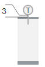 |
Pipe | BA_HVAC_HQ_1\ DYN_2D_Sensor_Temperature_Generic_All_001 | 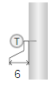 |
Wall | BA_HVAC_HQ_1\ DYN_2D_Outside Sensor_Temperature_Generic_All_001 Others: 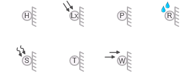 | 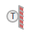
|
- In the Mode group, conduct one of the following actions:
- Click Design
 . Previously rotated objects appear in the default direction.
. Previously rotated objects appear in the default direction. - (Optional) Click Test
 . In this case, the sensor does not display in its true size.
. In this case, the sensor does not display in its true size. - In System Browser, select Logical view.
- For a duct sensor, select Logical > [Network name] \...\ [Plant] >
- [TSu (supply air sensor)]
- [TEx (extract air sensor)]
- [TEh (exhaust air sensor)]
- And others
- For a pipe sensor, select Logical > [Network name] \...\ [Plant] >
- [PreHcl\TVl (Preheating coils\flow temperature sensor)]
- [ReHcl\TVl (Reheating coils\flow temperature sensor)]
- And others
- For a wall sensor, select Logical > [Network name] \...\ [Plant] >
- [TOa (outside air sensor)]
- [TR (room sensor)]
- And others
- Drag the object to the graphics page.
- The added object displays at the maximum scale.
Rotating
- The sensor symbol is added to the graphic.
- In the Mode group, click Test .
- Select the sensor symbol.
- Left-click and hold, then right-click until the sensor symbol displays in the desired direction.
- Release the left mouse button.
- The sensor symbol is displayed in the desired direction.
Sensor Direction | ||||
Direct Entry of Direction under Symbol Properties > Substitution > Direction | ||||
0 | 1 | 2 | 3 | 4 |
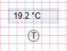 | 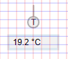 | 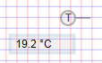 | 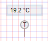 | 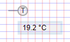 |
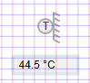 | 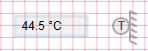 | 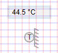 | 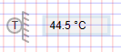 | |
Configuring Display and Symbol
As an option, you can configure the frame, display precision, and unit for the analog display.
- In the Display Box field, enter a number from 0 through 1.
- 0 = No frame displays.
- 1 = Frame display.
- In the Precision field, enter a number from 0 through 5.
- 0 = No decimal points display.
- 1-5 = Displays number of decimal points as per entry from 1 through 5.
- In the SensorFontBold field, enter a number from 0 through 1.
- 0 = Text is displayed as normal.
- 1 = Text is displayed as bold face.
- In the SensorFontSize field, enter a number from 10 through 14 (default is 12).
- In the SensorName field, enter a letter from A through Z (default is T). The text display as a symbol.
- In the Units field, enter the unit. The unit is displayed by value.
NOTE: A manually entered value overwrites the imported unit. - (Applies only to Wall sensor) In the WallColor field, enter 0 or 1.
- 0 = Wall background as per side background.
- 1 = Wall background is red.